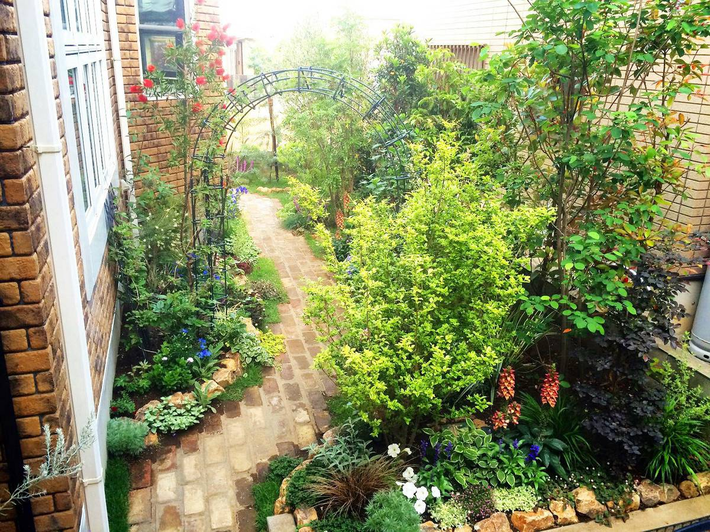
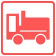

庭園造作工/産業廃棄物処理・収集・運搬業

当社は、一般住宅からビルなどの建築物の解体／産業廃棄物収集運搬／樹木の伐採・抜根工事／各種外構・舗装工事／樹木葬等の業務を行っております。プロフェッショナルな有資格者による高度な技術を駆使し、時代とお客様のニーズに合った施工を提供しております。
まずは無料でご相談・無料でお見積!
家を建て替えるので更地にしたい、土地を造成したい、産業廃棄物を運んで欲しいなど、解体工事・土木工事に関するお悩み・ご相談を、親身になってお受けいたします。ぜひ、お気軽にお問い合わせください。
栄光産業の土木工事の種類
栄光産業では、以下の種類の土木工事を請負っております。
一般土木工事／外構工事／擁壁工事／庭園造作工事／樹木葬／駐車場工事／開発工事／宅地造成工事／足場工事／伐採・伐根工事
上記以外の土木工事でもお気軽にご相談ください。

栄光産業の解体工事の種類
栄光産業では、以下の種類の解体工事を請負っております。
家屋解体・アパート解体・マンション解体・ビル解体・工場解体・店舗解体・事務所解体・倉庫解体・プラント解体・ガソリンスタンド解体・ショッピングセンター解体・内装解体・地下室解体・構築物解体／木造解体・鉄筋解体・鉄骨解体・鉄骨鉄筋解体・ALC解体・PC解体・プレハブ解体・ブロック解体・レンガ解体／車庫解体・地下車庫解体・立体駐車場解体／土間解体・コンクリート解体・アスファルト解体・擁壁解体・門解体・フェンス解体・外構解体／高架水槽解体・地下貯水槽解体・井戸撤去埋め戻し／手解体・機械解体
上記以外の解体工事でもお気軽にご相談ください。
工事対象エリア
神奈川県、東京都、埼玉県、千葉県、静岡県、山梨県を工事エリアとしております。
また、現場まですぐにかけつけられる様、24時間体制を整えております。